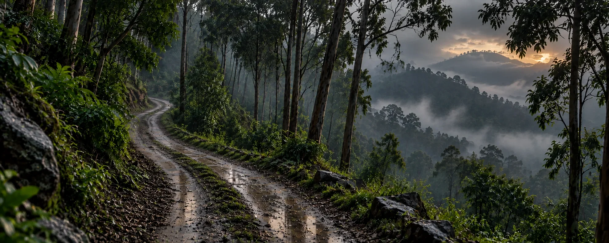
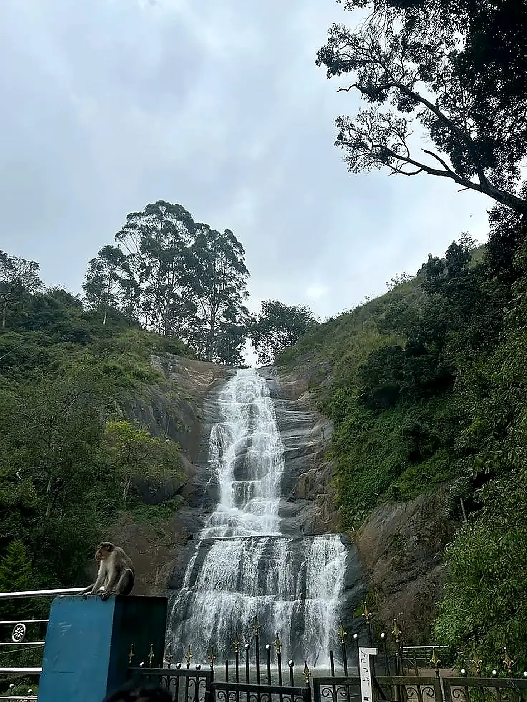
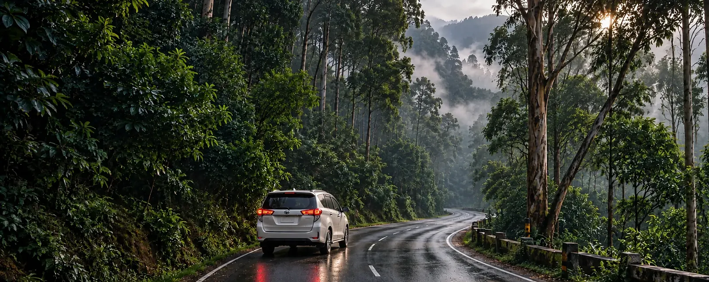

Adventure Tour · Western Ghats
Kodaikanal Adventure Tour: Pepper Falls Trek
Step off the beaten path to Pepper Falls — a scenic drive, a short guided trek and quiet time at one of Kodaikanal's most secluded waterfalls.
Free quoteReply within hoursPrivate cab, not shared
Quick answer
What Is the Kodaikanal Adventure Tour?
- Duration4–5 hours
- WalkEasy to moderate
- PricingFree quote
The Kodaikanal Adventure Tour is a 4–5 hour guided outing with a scenic drive and an easy-to-moderate forest trek to a secluded waterfall near Poombarai and Mannavanur.
It is best for nature lovers, photographers, birdwatchers and couples looking for adventure activities in Kodaikanal beyond the usual viewpoints. Book this trekking package with Cottages Kodaikanal on WhatsApp or by phone; pricing depends on vehicle and group size.

Pepper FallsOff the beaten path
Pepper Falls Tour – Kodaikanal's Hidden Gem in the Wilderness
Step off the beaten path and explore the lesser-known beauty of Pepper Falls in Kodaikanal, one of Kodaikanal's serene and secluded natural wonders. Tucked away in the lush greenery of the Western Ghats, this tranquil waterfall offers a perfect escape for nature lovers, photographers, and those seeking quiet moments in the heart of the hills.
Raw, peaceful and relatively untouched — a break from the city, in the middle of the forest.
Looking for easier, roadside cascades? See our guide to the waterfalls in Kodaikanal. Planning the journey up? Read how to reach Kodaikanal. Kodaikanal itself sits in the Palani Hills of Tamil Nadu (more about the hill station).
Why go
Why Choose This Trek in Kodaikanal?
Unlike the more popular tourist spots, Pepper Falls remains relatively untouched, offering a raw, peaceful environment. Surrounded by dense forests, pepper plantations, and chirping birds, the waterfall gently cascades down mossy rocks, forming a small, refreshing pool below. It's an ideal spot for a peaceful break from the city, where you can reconnect with nature.
- Dense forests
- Pepper plantations
- Chirping birds
- Mossy rocks
- A refreshing pool
The day on the trail
What to Expect on the Kodaikanal Adventure Tour
From the winding drive to the quiet minutes beside the water, here is how the day unfolds.
- 1
Scenic Drive
Winding mountain roads and spice-scented plantations on the way to the trailhead.
- 2
Short Guided Trek
An easy to moderate walk along forest trails to reach the falls.
- 3
Time at the Falls
Relax, take photos and enjoy the sounds of flowing water.
- 4
Local Insight
Learn about native plants, pepper cultivation and the ecosystem of the region.
- +
Optional Picnic
A picnic setup or packed refreshments, arranged on request.
On request
Like this route? Get your price today
Send your date and group size. We confirm the cab and a fixed fare, usually within a few hours.
- Free quote, no obligation
- One private vehicle for your group
- Pickup from your hotel
Tour details
Kodaikanal Trekking Package at a Glance
Booking
Book the Kodaikanal Adventure Tour & Trekking Package
Ready to book the Kodaikanal Adventure Tour? This trekking package is booked directly with us — no agents. Pricing depends on your vehicle and group size, and we send an exact quote, usually within a few hours.
- Share your dateTell us your travel date and group size to book your trekking tour.
- Confirm the routeWe check current access to the falls, which varies seasonally.
- Get your quote & confirm bookingTrekking package price for your vehicle, plus any picnic add-on.
Questions
Kodaikanal Adventure Tour FAQs
Quick answers about the Pepper Falls trek. Anything else? Message us on WhatsApp.
Pepper Falls is a quiet, lesser-visited waterfall in the Western Ghats near Kodaikanal, surrounded by forest and pepper plantations. Unlike the popular roadside falls, it is reached on a short guided trek.
About 4–5 hours, run as a full-day outing. That covers the scenic drive, the guided trek and your time at the falls.
It is an easy to moderate forest walk and suits most age groups.
Near the Poombarai or Mannavanur region. Exact access varies seasonally, so we confirm the current route when you book.
Nature lovers, birdwatchers, couples, solo travelers and photographers — anyone after a quiet waterfall rather than a crowded viewpoint.
Yes. An optional picnic setup or packed refreshments can be arranged on request when you book.
Message us on WhatsApp or call +91 75023 45777 with your date and group size. We confirm current access to the falls and send a quote for your vehicle, usually within a few hours. You can also use the contact page.
There is no fixed price list. The trekking package is priced by vehicle and group size, with an optional picnic add-on. Message us your date and group size and we send an exact quote, usually within a few hours.
Waterfalls look their fullest after rain, but forest trails can be slippery and access to the falls varies seasonally. Tell us your dates and we will advise on the current conditions before you commit.
Yes — see the full range of tours and ready-made packages on the Travels in Kodaikanal page.

Book Your Kodaikanal Trekking Tour Today
The beauty of Pepper Falls lies not just in its waters — but in the peaceful journey that leads you there.